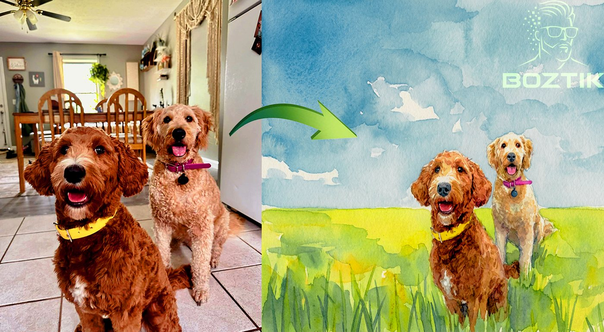
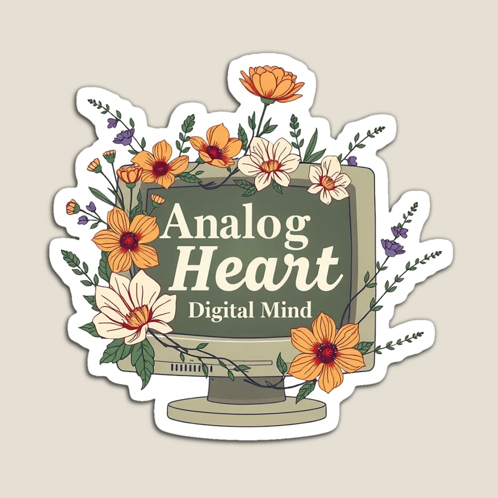
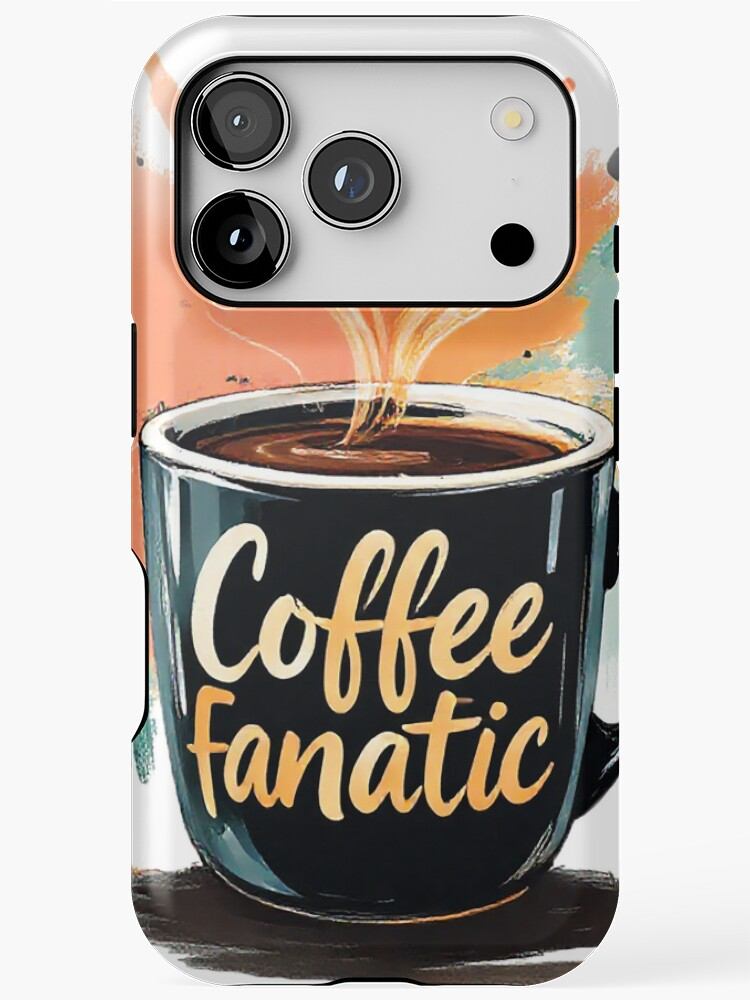
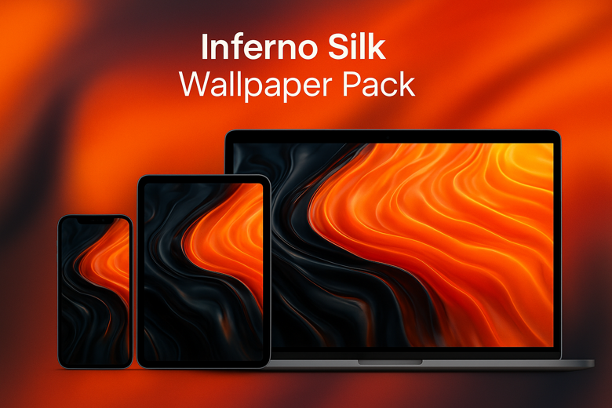
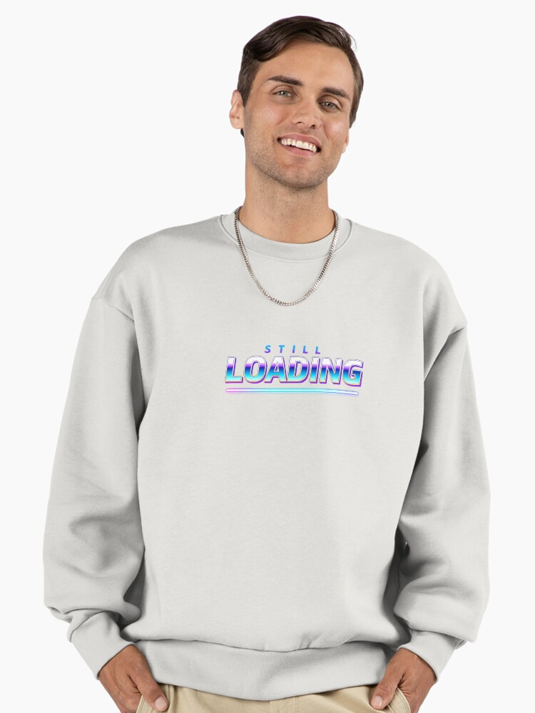
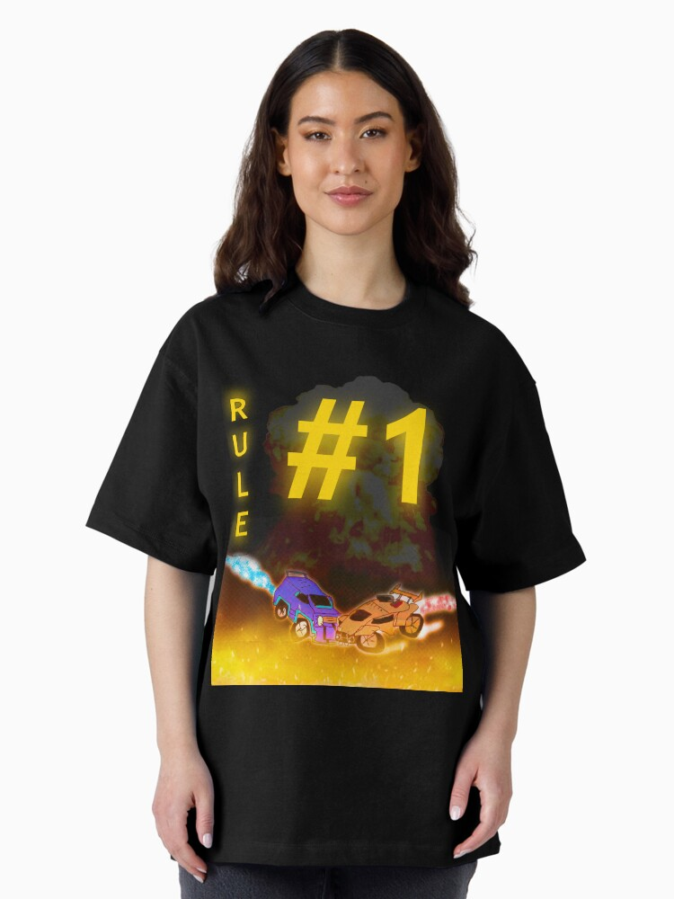
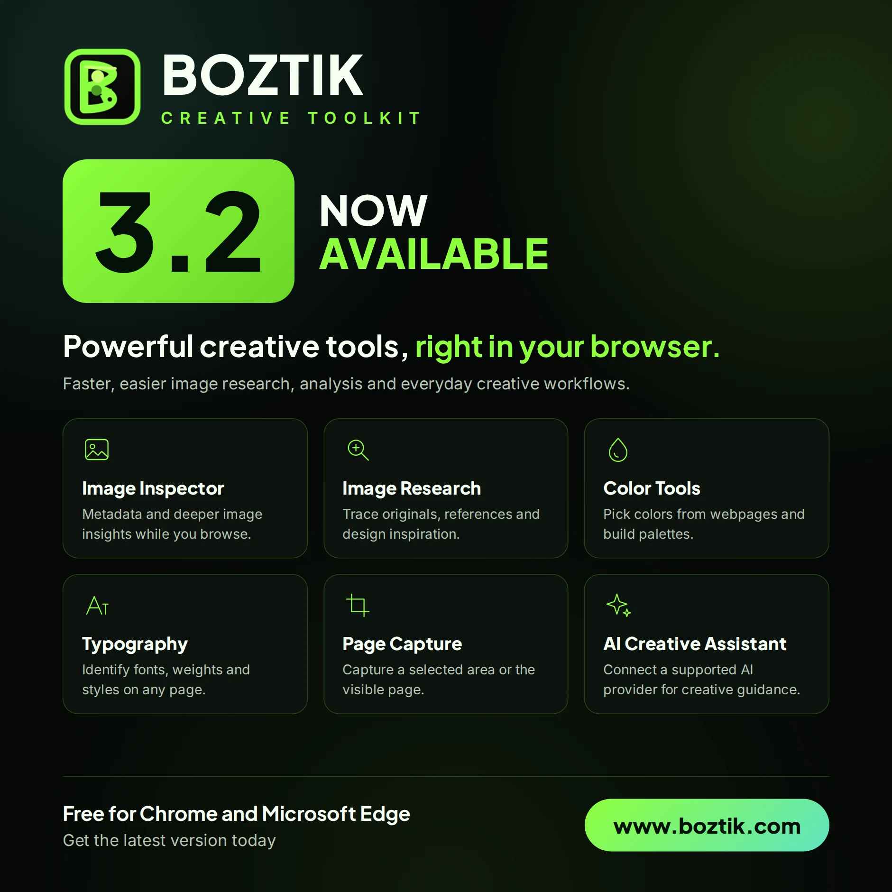

Independent creative studio
Photos restored. Tools built. Designs made to keep.
Boztik is one person's studio: photo restoration and creative editing for clients, free browser tools for anyone who works with images, and original designs you can wear, stick on things or set as a wallpaper.

It started with the edit. The rest grew out of it.
Boztik began with hands-on photo editing and restoration. The browser tools came from the problems that work kept throwing up, and the original designs now sit beside it under the same name.
-
Photo editing and restoration
Restoration, retouching, object removal and compositing for personal and business images.
-
Free image tools
An Image Inspector and a Creative Assistant that run in your browser, plus the Creative Toolkit extension. No account needed.
-
Original designs
Merchandise on Redbubble and TeePublic, and wallpaper packs on Ko-fi.
Real edits, shown before and after.
Each project pairs the original with the finished result and a note on what changed. The full portfolio has more.



Wear it. Stick it. Set it as your wallpaper.
A selection from the Boztik shops. Merchandise lives on Redbubble and TeePublic, and wallpaper packs are on Ko-fi. The Stores page has the wider range.

Merchandise
Merchandise
Wallpaper pack
Merchandise
Merchandise Wallpaper pack
Wallpaper pack
Loading the latest designs.
A new batch of designs is on the way.
The shops are open in the meantime.
Go straight to a shop: Redbubble TeePublic Wallpapers on Ko-fi

A free browser toolkit for anyone who works with images.
Inspect any image, pull colors and fonts from the page you're on, capture an area, and ask for creative guidance when you want it. Free for Chrome and Edge, with no account needed.
Explore the Creative ToolkitPlain-language guides on restoration and retouching.
Short reads from the same desk the editing work comes from.
- Restoration How Professional Photo Restoration Works What actually gets repaired in a damaged print, and why restoring too much is its own mistake.
- Retouching How to Remove Unwanted Objects From a Photograph Removal is really reconstruction. What separates an invisible fix from an obvious one.
- Comparison AI Photo Editing vs Professional Photo Editing Where automatic tools genuinely help, and where a human editor still earns the difference.
Also on Boztik
-
Image Inspector
Check an image's resolution, file size and color palette in your browser. Files stay on your device.
-
Creative Assistant
Quick answers on Photoshop workflow, Firefly prompts and export settings, or connect your own AI key for live replies.
-
Boztik Deliver
How finished work reaches clients: a private link for each project that expires automatically. No account needed.
-
About Boztik
More about the person and the work behind the studio.
Have a photo that deserves better?
Restoration, retouching, object removal or something custom. Pricing is fair and flexible, and you decide what the finished work is worth.